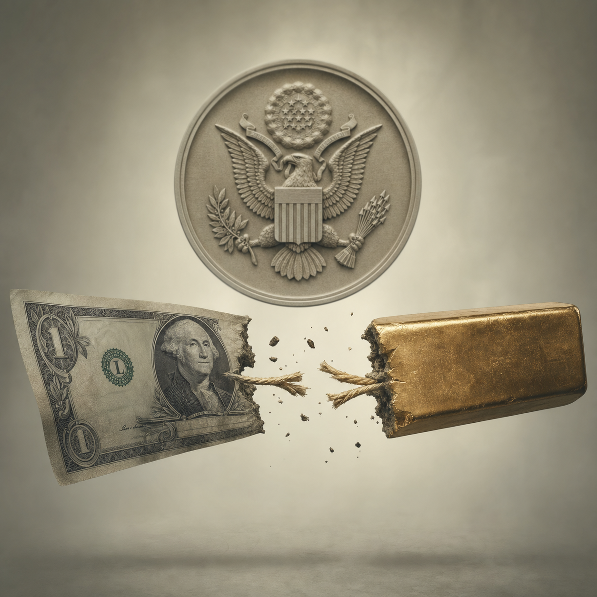

หน้านี้ต้องชี้ให้เห็น continuity กับหน่วยก่อน ๆ ว่า reserve mismatch เป็นปัญหาเดิม เพียงแต่ตอนนี้มันเกิดในระดับโลกแล้ว
ทำให้ผู้เรียนเห็นว่า Bretton Woods ไม่ได้ล้มเพราะเรื่องนามธรรม แต่เพราะคำสัญญาแลกทองเริ่มรับไม่ไหว
เชื่อมตรงกลับไปหาหลักการเดิมเรื่องตั๋วแลกทองและ bank run
ระบบ Bretton Woods อยู่ได้เกือบ 40 ปี แต่เมื่อเวลาผ่านไป หลายประเทศก็เริ่มกังวลว่า สหรัฐฯ มีดอลลาร์หมุนเวียนอยู่มากกว่าทองที่รองรับไว้จริงหรือเปล่า
พอเกิดความสงสัย ประเทศต่าง ๆ บางส่วนก็เริ่มขอแลกดอลลาร์กลับเป็นทอง และสหรัฐฯ ก็เผชิญกับแรงกดดันแบบ bank run ในระดับโลก
ตรงนี้สำคัญมาก เพราะมันทำให้เห็นว่าโจทย์เดิมเรื่องสิ่งแทนทองมีมากกว่าทองจริง ไม่ได้หายไปไหน มันแค่ย้ายระดับจากร้านเอกชนขึ้นมาเป็นระบบโลก

นี่คือ one-way door ของทั้ง chapter ผู้เรียนควรออกจากหน้านี้พร้อมความรู้สึกว่าโลกเข้าสู่ยุคใหม่แล้วจริง ๆ
ทำให้ผู้เรียนจำ Nixon Shock เป็นจุดเปลี่ยนเชิงโครงสร้าง ไม่ใช่แค่ข่าวเหตุการณ์หนึ่ง
เปิดประตูสู่ Unit 13 ที่จะอธิบายโลกของเงิน fiat อย่างเต็มตัว
ในวันที่ 15 สิงหาคม 1971 ประธานาธิบดี Richard Nixon ประกาศหยุดการแลกดอลลาร์เป็นทองคำ ในสิ่งที่ภายหลังเรียกว่า Nixon Shock
ในตอนนั้นอาจถูกอธิบายว่าเป็นมาตรการชั่วคราว แต่ในทางปฏิบัติ มันคือการตัดความเชื่อมโยงระหว่างดอลลาร์กับทองคำออกไป
ตั้งแต่นั้นเป็นต้นมา ดอลลาร์ก็ไม่ได้แลกกลับเป็นทองจากคลังสหรัฐฯ ได้แบบเดิมอีก และตรงนี้เองคือประตูสู่โลกของ fiat money อย่างเต็มตัว